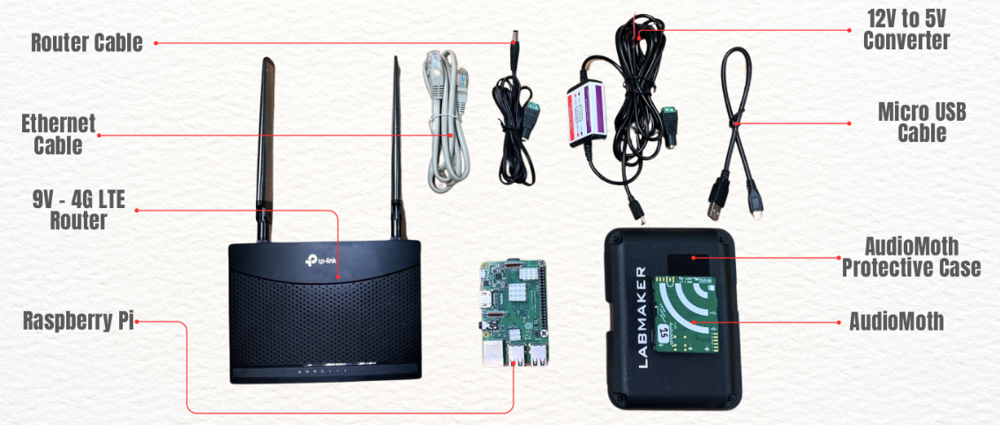

Hardware Components & Setup Documentation¶
Device list¶
This system consists of the following IoT hardware components:
- Raspberry Pi 3 B+ (64 GB microSD storage)
- AudioMoth (Acoustic logger)
- 4G Router (with SIM card)
- Internet SIM Card
- Solar Panel (with battery storage)
Raspberry Pi setup¶
Hardware¶
- Model: Raspberry Pi 3 B+
- Storage: 64 GB microSD card
OS installation¶
- Insert the SD card into your computer.
- Use Balena Etcher (or similar) to flash the provided
.imgbackup OS image. - Insert the flashed SD card into the Raspberry Pi.
- Power on the device.
Download Raspberry Pi OS Image
Login credentials¶
Default credentials (can be customized):
- Username: pi
- Password: raspberry
Example VPN configuration¶
Each Raspberry Pi has its own OpenVPN account.
File structure¶
Navigate to the OpenVPN directory:
cd /etc/openvpn/
ls
Expected files:
credentials.txt
openvpn_MONSOON_TEA05.conf
openvpn_MONSOON_TEA05.conf→ Converted.ovpnclient config filecredentials.txt→ VPN username & password (two lines only)
Credentials setup¶
Check credentials:
cat /etc/openvpn/credentials.txt
vpn_username
vpn_password
sudo chmod 600 /etc/openvpn/credentials.txt
Example VPN service setup¶
Enable & start service:
sudo systemctl enable openvpn@openvpn_MONSOON_TEA05
sudo systemctl start openvpn@openvpn_MONSOON_TEA05
Manual connect:
sudo openvpn --config openvpn_MONSOON_TEA05.ovpn
Verify connection:
ifconfig
10.81.234.5.
Configuration File Explanation (config.json)¶
This file defines the settings for the bird sound monitoring device. It covers FTP transfer, sensor recording behavior, system paths, and device identity.
Example config.json:
{
"ftp": {
"uname": "monsoon",
"pword": "p8z3%1P#04",
"host": "192.168.70.5/production-workflow-ec2",
"use_ftps": 1
},
"offline_mode": 0,
"sensor": {
"sensor_index": 2,
"sensor_type": "USBSoundcardMic",
"record_length": 600,
"compress_data": false,
"capture_delay": 0
},
"sys": {
"working_dir": "/home/pi/tmp_dir",
"upload_dir": "/home/pi/continuous_monitoring_data",
"reboot_time": "02:00"
},
"device_id": "00000000f1c084c2"
}
FTP Settings (ftp)¶
Controls how audio files are transferred from the device to the server.
| Key | Value Example | Description |
|---|---|---|
uname |
"monsoon" |
FTP username for authentication. |
pword |
"p8z3%1P#04" |
FTP password for authentication. |
host |
"192.168.70.5/production-workflow-ec2" |
FTP server address and target directory for uploads. |
use_ftps |
1 |
Enables FTPS (1 = secure FTPS, 0 = plain FTP). |
Offline Mode (offline_mode)¶
Determines whether the device operates without uploading data.
0→ Online mode (default) – data is uploaded to server.1→ Offline mode – data is only stored locally.
Sensor Settings (sensor)¶
Defines how the sensor captures audio.
| Key | Value Example | Description |
|---|---|---|
sensor_index |
2 |
Index/ID of the sensor used (useful if multiple microphones are connected). |
sensor_type |
"USBSoundcardMic" |
Type of sensor (here: USB sound card microphone). |
record_length |
600 |
Recording length in seconds (600 = 10 minutes). |
compress_data |
false |
Whether to compress recordings before saving/uploading. |
capture_delay |
0 |
Delay before starting capture (in seconds). |
System Settings (sys)¶
Defines working directories and reboot schedule for the device.
| Key | Value Example | Description |
|---|---|---|
working_dir |
"/home/pi/tmp_dir" |
Temporary folder for intermediate files. |
upload_dir |
"/home/pi/continuous_monitoring_data" |
Directory where recordings are stored before upload. |
reboot_time |
"02:00" |
Daily scheduled reboot time (HH:MM, 24-hour format). |
Device ID (device_id)¶
- Example:
"00000000f1c084c2" - Unique identifier for the Raspberry Pi device.
- Used to distinguish recordings when multiple devices upload data to the same server.
Automatic recording service¶
This shellscript is setup to run the recording script at startup and reboot. So, the device will start recording as soon as it is powered on. And it will also reboot at the scheduled time. The shellscript is located at /home/pi/custom-pi-setup/recorder_startup_script.sh.
systemd service (/etc/systemd/system/shellscript.service):
[Unit]
Description=My Shell Script
[Service]
ExecStart=/home/pi/custom-pi-setup/recorder_startup_script.sh
[Install]
WantedBy=multi-user.target
Check live service logs:
journalctl -u shellscript.service -f
Important commands¶
| Command | Purpose |
|---|---|
arecord -l |
List available recording devices |
journalctl -u shellscript.service -f |
Live monitoring of recording service |
sudo systemctl restart shellscript.service |
Restart recording service |
AudioMoth setup¶
Overview¶
AudioMoth is a low-cost, full-spectrum acoustic logger, based on the Gecko processor range from Silicon Labs.
It can record audible and ultrasonic frequencies at rates from 8,000 to 384,000 samples/sec.
It is used in two modes: mobile and station.
Modes¶
Mobile Type¶
- Portable configuration for temporary deployments
- Ideal for short-term surveys
Download Mobile AudioMoth Manual (PDF)
Station Type¶
- Fixed position setup for continuous monitoring
- Powered by solar & external battery
Download IoT Station Setup Manual (PDF)
Router setup & troubleshooting¶
- Type: 4G Router with SIM
- Purpose: Internet connection for remote locations
Troubleshooting Checklist:
1. Check LED status indicators
2. Ensure SIM card is active
3. Restart router if connection drops
Solar panel & battery¶
Battery¶
- Stores energy for night/cloudy use
- Blink Indicators:
- 1 blink → Low
- 2 blinks → Medium
- 3 blinks → Full
System workflow¶
- Power Supply → Solar Panel → Battery → Raspberry Pi & Router
- Data Capture → AudioMoth or Raspberry Pi records audio
- Data Transmission → Router sends via 4G
- Remote Access → VPN connection for management
- Monitoring → Logs checked via
journalctlor SSH
